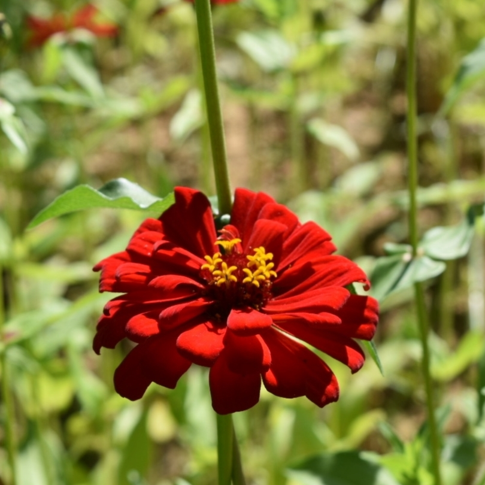

저는 소설 책 읽기를 좋아합니다.
특히 소설책 중에서도 추리소설이나 미스터리 소설 읽기를 좋아합니다.
추리소설 속 사건의 범인을 찾는 것도 좋아하고
사건에 어떠한 비밀이 숨어있는지 추리하는 것도 좋아합니다.
특히 소설책 중에서도 추리소설이나 미스터리 소설 읽기를 좋아합니다.
추리소설 속 사건의 범인을 찾는 것도 좋아하고
사건에 어떠한 비밀이 숨어있는지 추리하는 것도 좋아합니다.
그리고 지식과 정보를 주는 책이나 힐링을 주는 에세이 같은 책을
필사하는 취미를 가지고 있습니다.
필사 어플을 통해 하루 필사를 하는 것이 아침에 생각을 정리하거나
자기 전에 마음을 비우는 데에 도움이 되었습니다.
필사하는 취미를 가지고 있습니다.
필사 어플을 통해 하루 필사를 하는 것이 아침에 생각을 정리하거나
자기 전에 마음을 비우는 데에 도움이 되었습니다.


저는 자기 전에 계획을 세우고 아침에 일어나 세워놓은
계획을 보면서 하나씩 수행하고 체크하는 것을 좋아합니다.
하나씩 지켜나갈 때마다 느껴지는 성취감이 저를 기쁘게 합니다.
초등학교를 다닐 때부터 계획을 세우고
그것을 지키는데에 습관이 되어서 지금까지도 쭉 이어나가고 있습니다.
계획을 보면서 하나씩 수행하고 체크하는 것을 좋아합니다.
하나씩 지켜나갈 때마다 느껴지는 성취감이 저를 기쁘게 합니다.
초등학교를 다닐 때부터 계획을 세우고
그것을 지키는데에 습관이 되어서 지금까지도 쭉 이어나가고 있습니다.

저는 여행을 가서 풍경 사진 찍는 것을 좋아합니다.
그 중에서도 특히 달 사진 찍는 것을 좋아합니다.
집에 돌아오는 길에 문득 하늘을 보았을 때 밝게 떠있는 달을 보며 안정감을 느낍니다.
집에 돌아오는 길에 문득 하늘을 보았을 때 밝게 떠있는 달을 보며 안정감을 느낍니다.